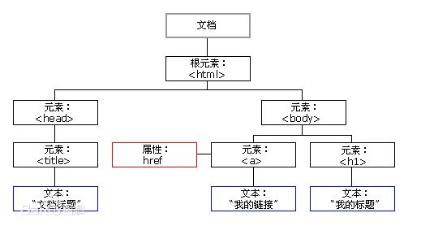
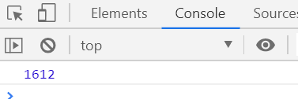
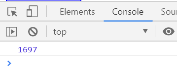
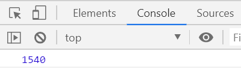
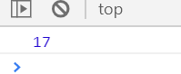
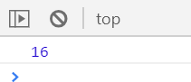
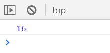
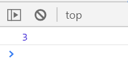
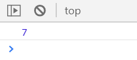
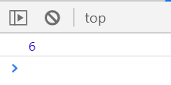

文档对象模型（Document Object Model，简称DOM），是W3C组织推荐的处理可扩展标记语言（HTML或XML）的标准编程接口。
W3C已经定义了一系列DOM接口，通过这些DOM接口可以改变网页的内容、结构和样式。
1、对于JavaScript，为了能够使JavaScript操作HTML，JavaScript就有了一套自己的dom编程接口；
2、对于HTML，dom使html形成一颗dom树，包含文档、元素、节点。
文档：整个页面就是一个文档；
元素：页面中所有的标签都叫做元素；
节点：页面中所有的内容都是节点。文档节点（ducument对象）、元素节点（element对象）、属性节点（attribute对象）、文本节点（text对象）、注释节点（comment对象），代码间的换行也是一个节点。
我们获取过来的所有DOM元素都是一个对象（object）。

对于DOM操作，我们主要针对于 对元素的操作，主要有创建、增、删、改、查、属性操作、事件操作。
主要包括三种：
1、document.write
2、innerHTML：将内容写入某个DOM节点，不会导致页面全部重绘。
3、createElement：也不会导致页面重绘。
innerHTML和createElement效率对比：
①innerHTML拼接效率测试：
1 <script>
2 function fn() {
3 var d1 = +new Date();
4
5 var str = '';
6 for (var i = 0; i < 1000; i++) {
7 document.body.innerHTML += '<div style="width:100px; height:2px; border:1px solid blue;"></div>';
8 }
9 var d2 = +new Date();
10 console.log(d2 - d1);
11 }
12 fn();
13 </script>执行结果如下

执行速度为1600毫秒左右
②createElement效率测试
1 <script>
2 function fn() {
3 var d1 = +new Date();
4
5 for (var i = 0; i < 1000; i++) {
6 var div = document.createElement('div');
7 div.style.width = '100px';
8 div.style.height = '2px';
9 div.style.border = '1px solid red';
10 document.body.appendChild(div);
11 }
12 var d2 = +new Date();
13 console.log(d2 - d1);
14 }
15 fn();
16 </script>执行结果如下

执行速度为十几秒
③innerHTML数组效率测试
1 <script>
2 function fn() {
3 var d1 = +new Date();
4 var array = [];
5 for (var i = 0; i < 1000; i++) {
6 array.push('<div style="width:100px; height:2px; border:1px solid blue;"></div>');
7 }
8 document.body.innerHTML = array.join('');
9 var d2 = +new Date();
10 console.log(d2 - d1);
11 }
12 fn();
13 </script>执行结果如下

执行速度为个位数秒
结果分析：
执行效率：innerHTML数组效率 > createElement效率 > innerHTML拼接效率
所以创建多个元素时innerHTML效率更高（不要拼接字符串，采用数组形式拼接），结构稍微复杂麻烦一些。
createElement()创建多个元素时效率稍微低一些，但结构清晰。
主要包括两种：
1、appendChild：node.appendChild(child)是在后面追加元素
2、insertBefore：node.insertBefore(child)是添加到最前面
removeChild：node.removeChild(child)删除父节点中的一个子节点，并返回被删除的节点。
主要是修改dom元素的属性，dom元素的内容、属性，表单的值等。
1、修改元素属性：src、href、title等。可以直接修改，这些属性都是可读写的。
2、修改普通元素内容：innerText、innerHTML。（两者都是可读写的）
element.innerText：读取时，只读取标签里面的内容，不会少文字，但不会读取里边的标签、空格和换行。（非标准）
element.innerHTML：读取时，整个读取出来，包括html标签，同时保留空格和换行。（W3C标准，常用）
3、修改表单元素：value（表单里边的内容）、type（表单类型）、disabled（是否被使用）等。
4、修改元素样式：style、className。可以直接通过style修改属性，如果需要修改的属性较多或者为了方便操作，建议修改className。
主要获取查询dom的元素
1、DOM提供的API方法：getEementById、getElementsByTagName等古老的方法。
2、H5提供的新方法：querySelector、querySelectorAll 。（提倡）
3、利用节点操作获取元素：父（parentNode）、子（children）、兄（previousElementSibling、nextElementSibling）。（提倡）
主要针对自定义属性
1、setAttribute：设置dom的属性值。 element.setAttribute('属性', '值'); 主要针对自定义属性
2、getAttribute：获取dom的属性值
获取dom的属性值有两种方法：element.属性 和 element.getAttribute（‘属性’）
区别：
element.属性 获取的是内置属性值（元素本身自带的属性）；
element.getAttribute（‘属性’）主要获取的是自定义的属性（我们自己添加的属性）。
3、removeAttribute：移除属性。 removeAttribute(‘属性’)
给元素注册事件，采取：事件源.事件类型=事件处理程序
onclick：鼠标左键单击事件。
onmouseover：鼠标经过时触发。
onmouseout：鼠标离开时触发。
onfocus：获得鼠标焦点触发。
onblur： 失去鼠标焦点触发。
dblclick： 鼠标左键双击事件。
onmousemove：鼠标移动触发。
onmousedown：按下鼠标键时触发。
onmouseup：释放按下的鼠标键时触发。